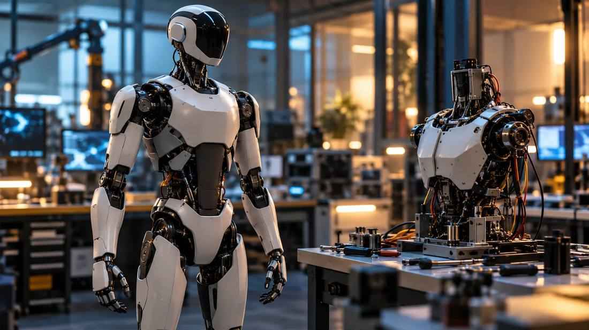
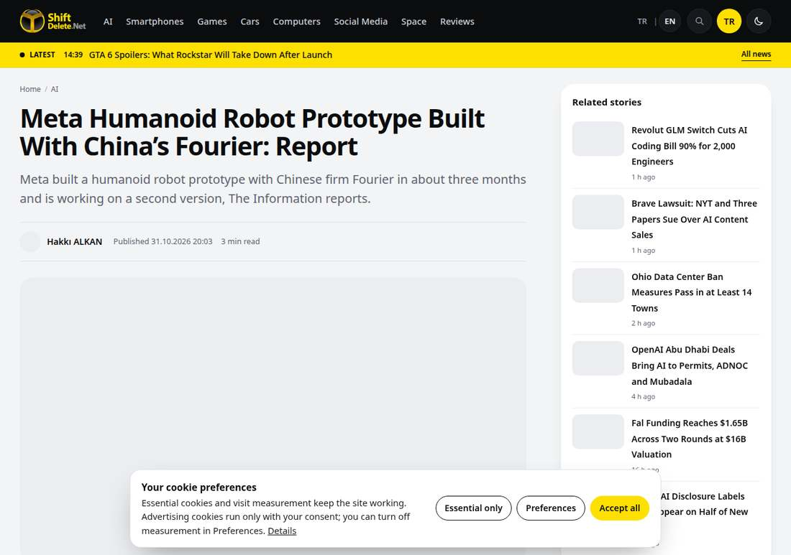

Meta's Humanoid Robot Was Assembled in Three Months
According to The Information, relayed by Reuters, Meta and Shanghai-based Fourier built a humanoid robot prototype codenamed Max in about three months. At roughly 1.5 meters tall and 48 kilograms, a second generation is already under way, and Meta says it is for internal research only, not for sale.

- 01THE BUILD — Meta's robotics lead took part in development at Fourier's Shanghai plant.
- 02THE SHOWING — Max was shown to employees at an internal event in late August.
- 03THE NEXT — Development of the second-generation Max 2 began in September.
WHAT HAPPENEDWhat Happened
According to The Information's October 31 report, relayed by Reuters, Meta and Chinese robotics company Fourier built a humanoid robot prototype in about three months. Internally codenamed Max, it stands about 1.5 meters tall, weighs 48 kilograms, runs on Nvidia's Jetson Thor chip, and was shown to some employees at an internal event in late August.
On division of labor, Fourier provides hardware experience; Meta's head of robotics products, Li-Chen Miller, spent nearly two months at Fourier's Shanghai plant taking part in the development. A second-generation Max 2 has been in development since September, reportedly with improved hands, added stair-navigation sensors and a built-in projector. Meta's line is that the collaboration is internal research, with no plan to sell it.
The backdrop is Meta looking for a body for its personal agent, Muse. CTO Andrew Bosworth has described humanoid robots internally as Muse acquiring a real body. Meta also acquired humanoid robot model company Assured Robot Intelligence in May 2026, pointing in the same direction.
BORROWED SPEEDThree Months Is Borrowed Speed
Building a prototype in three months is fast because it borrows mature hardware. Fourier started with rehabilitation exoskeletons and has long made full-size humanoid robots, so Meta did not need to build the body from zero. The essence of the partnership is trading someone else's hardware maturity for its own time.
It also shows Meta's robotics strategy has changed. No longer insisting on building everything itself, it first secures a body that runs, then installs its own agents and models inside.
NOT FOR SALE'Not for Sale' Is the Most Honest Line at This Stage
Meta repeatedly stresses there is no plan to sell it, and that is worth hearing carefully. Humanoid robots remain four gates away from reliable home use: manufacturing, cost, safety and reliability. A prototype that can walk and grasp small objects is not the same as one that can enter a living room.
An unsold prototype's value is internal validation: validating Muse's physical interaction, validating the engineering trade-offs in hands and navigation, and letting the results decide where the next generation goes.
SINGLE SOURCEA Single Source Should Be Read as a Single Source
This report has a single source, and Reuters itself stated it could not immediately verify it. Height, weight, chip and timeline are all reported details, not product specifications. Reading it requires separating reporting from fact: the former is news, the latter awaits official confirmation.
For readers, the safest reading is that Meta is seriously building humanoid robots, faster than outsiders assumed, while the product form and timetable remain unknowns.
THE SHIFTWhat Changed
SIGNAL JUDGMENT — ANALYSISA Body First, a Product Later
Tokenta Signal's judgment: the point of Meta's humanoid news is not Max itself, but the strategic turn. Borrowing mature hardware to buy time gives the agent a body first, while the four gates to the living room get solved slowly.
WHAT REMAINS UNCERTAINWhat Remains Uncertain
EVIDENCEEvidence

The original confirms, per The Information's October 31 report, that Meta and Fourier built the humanoid robot prototype Max in about three months, at roughly 1.5 meters and 48 kilograms, that a second generation is in development, and that Meta says it is for internal research only, not for sale.
PRIMARY SOURCESPrimary Sources
- ShiftDelete: Meta Humanoid Robot Prototype Built With China's Fourier: Report
https://shiftdelete.net/en/meta-humanoid-robot - Digital Today: Meta develops humanoid robot prototype with Chinese firm Fourier
https://www.digitaltoday.co.kr/en/view/122209/meta-develops-humanoid-robot-prototype-with-chinese-firm-fourier-launches-second-generation-project